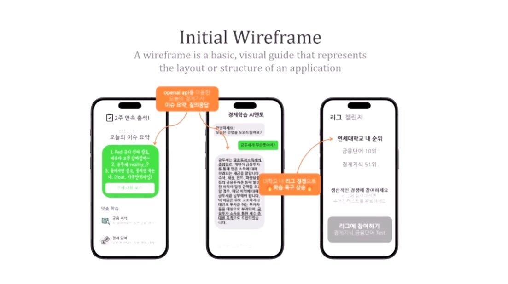
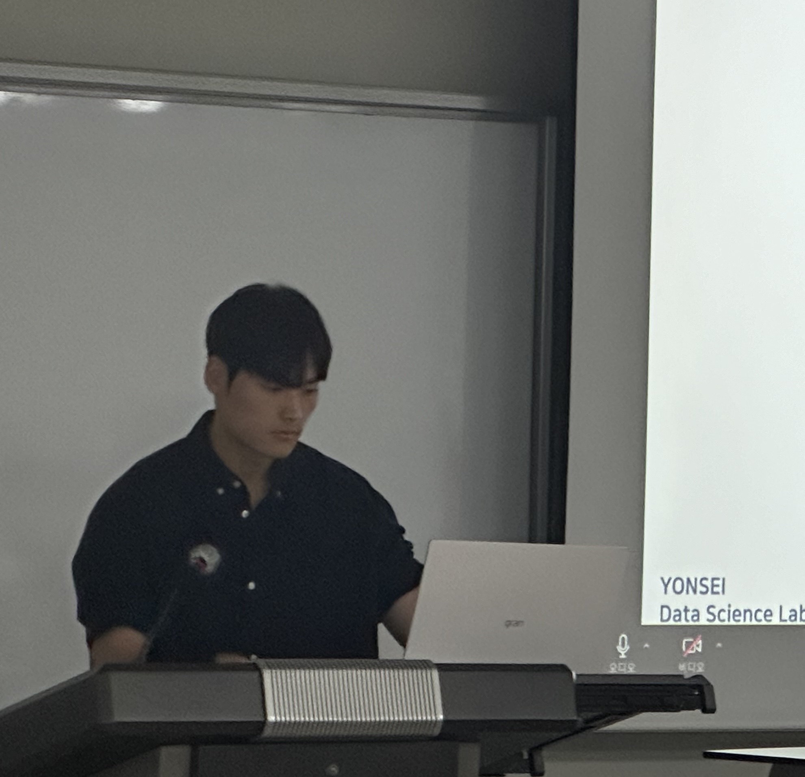

|
Jongwook Jeon I'm an undergraduate student in Yonsei University majoring in Electrical and Electronic Engineering. Currently, I am advised by Prof. Jongmin Lee and focusing on unsupervised RL research projects. My ambition is to develop innovative models that enhance autonomous decision-making, contributing scalable and generalizable insights to the broader AI community. |

|
Research InterestMy research focuses on Scalable and Robot Learning. Specifically, I aim to leverage Offline Reinforcement Learning to extract meaningful temporal abstractions (Skills) from static datasets. My ultimate goal is to enable robots to utilize these learned primitives to adapt robustly to novel environments. |
ProjectsThese include side projects and unpublished research work. |

|
Optimizing Optimization and Learning Rate Scheduler
Jongwook Jeon, Subin Park, Seungwoo Kang, Sihyeon Park DSL_Modelling Project By modeling the optimizer and learning rate scheduler updates as a sequential decision process, we optimize the strategy via a combination of BC and PPO. |
|  |
FinPT: Finance Chatbot
Jongwook Jeon*, Minkyung Baek, Kyunghwan Kim Yonsei 2nd GenAI (SilverPrize) Motivated by the critical issue of financial illiteracy among college students, FinPT is a web service designed to make financial knowledge accessible and user-friendly. By leveraging RAG technology, FinPT retrieves real-time data to provide students with up-to-date and easy-to-understand financial information. |

|
Improving Dog-Length Estimation Framework
Jungwoo Kim, Hyunjin Kim, Chaemin Hwang, Jeongwoo Lee, Joowon Yang, Jongwook Jeon*, Minkyu Kim, Youngil Lee, Yingjun Shen, Hyunah Ko DSL x Petnow project To achieve accurate pet body measurements from a single 2D image, we advanced our methodology by transitioning from depth estimation models to a direct approach utilizing 3D reconstruction. |
Seminars |
|  |
Basic Reinforcement Seminar
Delivered a comprehensive 5-week seminar series on Reinforcement Learning to the club team members in in Yonsei Data Science Lab Team. This series provided a theoretical explanation of Reinforcement based on CS285 & CAS4160. |
|
Website source code credit to Dr. Jon Barron. |